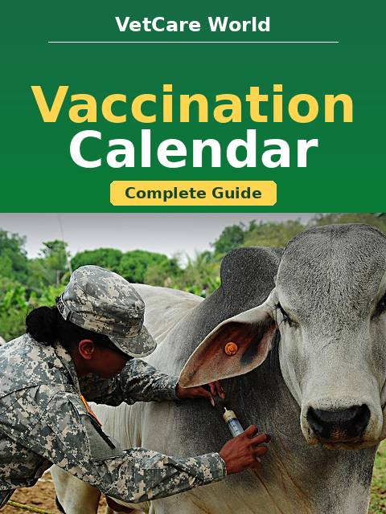
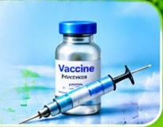

Why Vaccination Matters
Vaccination is the cheapest and most reliable way to protect cattle, buffalo, goats and sheep from deadly infectious diseases. A vaccine trains the animal's immune system to recognise a disease before it ever meets the real germ, so the animal can fight it off quickly.
Many of the most damaging diseases in Pakistan — foot-and-mouth disease, haemorrhagic septicaemia, black quarter, PPR and enterotoxaemia — can be prevented by timely vaccination. Treating a sick animal costs far more than vaccinating a healthy one, and some of these diseases kill animals before treatment can even begin.
Vaccination only works when the whole herd is covered, the vaccine is stored correctly, and booster doses are given on time. A single missed vaccination can leave a gap through which disease enters the farm.
Cattle & Buffalo Vaccination Schedule
The table below shows the core vaccines commonly used for cattle and buffalo in Pakistan. Always confirm the exact timing with your local veterinary officer, because schedules vary by district and season.
| Disease | Usual Timing | Notes |
|---|---|---|
| Foot-and-Mouth Disease (FMD) | Twice a year, commonly in spring and autumn | All cattle and buffalo over four months of age. Booster doses keep protection strong through the year. |
| Haemorrhagic Septicaemia (HS) | Once a year, usually before the monsoon season | Especially important for buffalo, which are more severely affected. Young animals need a booster after the first dose. |
| Black Quarter (BQ) | Once a year | Young, fast-growing animals are most at risk. Vaccinate calves and young stock before the high-risk season. |
| Anthrax | Once a year in endemic areas | Only where anthrax occurs. Never open the carcass of an animal suspected of anthrax — report it to the veterinary authorities immediately. |
For a printable month-by-month plan, see our Vaccination Calendar — Cattle, Buffalo & Goats and the Vaccination Calendar PDF in the Veterinary Library.

Goat & Sheep Vaccination Schedule
| Disease | Usual Timing | Notes |
|---|---|---|
| PPR (Peste des Petits Ruminants) | Once a year | A highly contagious viral disease of goats and sheep. Vaccinate all animals over four months of age; kids and lambs need vaccination once maternal immunity fades. |
| Enterotoxaemia (ET) | Twice a year | Caused by a toxin-producing gut bacterium. Risk rises with sudden changes to rich feed. Pregnant does and ewes are often vaccinated so their kids and lambs get protection through colostrum. |
| CCPP (Contagious Caprine Pleuropneumonia) | Once a year where the disease occurs | A serious respiratory disease of goats. Vaccination is recommended in areas where CCPP is known to occur. |
Goat pox vaccine is also used in areas where goat pox is common. Ask your local veterinarian which vaccines are needed in your area.
Calf Vaccination Basics
Calves are protected in their first weeks of life by antibodies in colostrum — the first milk after birth. Make sure every newborn calf drinks enough colostrum within the first hours of life.
As colostrum protection fades, calves need their own vaccinations. The first doses are usually given at around three to four months of age, followed by a booster dose a few weeks later. Your veterinarian will set the exact ages based on the local disease pattern.
Never vaccinate a sick, stressed or heavily worm-infested calf — treat the calf first, then vaccinate when it is healthy. Keep calves calm and shaded on vaccination day.

Cold Chain: Storing Vaccines Correctly
Most livestock vaccines must be kept cold — usually between 2°C and 8°C — from the shop to the animal. A vaccine that gets warm in the sun or freezes in a freezer compartment can lose its power completely, even though it looks normal.
- Carry vaccines in a cool box with ice packs, never loose in a hot vehicle.
- Store vaccines in the middle of a working refrigerator, not in the door or the freezer.
- Use opened vaccine bottles the same day; do not keep leftovers for the next round.
- Keep vaccines out of direct sunlight during the vaccination session.
- Check the expiry date before every use, and never use an expired vaccine.
Vaccination Records
Keep a simple written record for every animal: the animal's tag or name, the vaccine name, the date given, the batch number, and the date the next dose is due. A notebook or a card per animal is enough.
Good records prevent missed boosters, stop double vaccination, and help your veterinarian trace any problem back to a vaccine batch. They also prove the herd's vaccination status when animals are sold or moved.

Related Guides
Vaccination Calendar — Cattle, Buffalo & Goats · Foot-and-Mouth Disease (FMD) · Haemorrhagic Septicaemia (HS) · Black Quarter (BQ) · PPR in Goats · Enterotoxaemia in Goats · CCPP in Goats · Cattle Diseases · Goat Diseases · Farm Management · Veterinary Library
⚠️ Important: Vaccination schedules vary by region, season and disease risk. Always follow your local veterinary authority's current schedule and your veterinarian's advice for your herd.
✍️ Written by Dr. Shahid Bilal Depal, DVM (PVMC RVMP #15068)
This guide is for educational purposes. Consult a registered veterinarian for diagnosis and treatment.